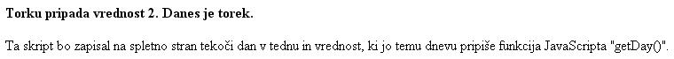

Nikoli ne jemlji poguma tistemu, ki stanovitno napreduje, pa èeprav zelo poèasi. (Platon)
 Slika 1 in 2: - koda in videz spletne strani 1. Izdelaj spletno stran, ki bo izgledala tako, kot kažeta sliki 1 in 2. Datoteko poimenuj "16apriimek.html". Ne pozabi na konènico ".html". POZOR: Izpis na tvoji spletni strani ali videz tvoje spletne strani morda ne bo tak, kot je na zgledu. Èe boš vajo izdelal/a v, denimo, èetrtek, se bo paè zapisal èetrtek in ne torek, kot je videti na zgledu. Saj to je ravno bistvo dinamiènih strani, da so odvisne od nekaterih vplivnih dejavnikov. POZOR: Najprej NATANÈNO izdelaj vajo v tej uèni enoti in jo pokaži profesorju, nato zapiši odgovore na spodnja vprašanja. 2. V kodo primera v tej uèni enoti vstavi spodaj navedene komentarje na ustrezna mesta, ki jih ti komentarji pojasnjujejo. //Ukaz za izhod iz ukaza "Switch" v primeru, ko je eden izmed postavljenih pogojev izpolnjen. //Ukaz, ki se izvede, èe noben izmed pogojev v stavku "Switch" ni izpolnjen. //Postavljeni pogoj alivrednost stavka "Switch". //uporaba funkcije, ki iz tekoèega datuma izlušèi tekoèi dan. //Napoved spremenljivke in prirejanje vrednosti s pomoèjo funkcije, ki vrne tekoèi datum. 3. Kodo primera v tej uèni enoti spremeni tako, da bo poleg obstojeèega izpisa izpisala še tekoèi datum. 1. Vprašanja za usmerjanje pozornosti in usvajanje novih besed: 1. Kdaj uporabimo programsko stikalo? 2. Kaj pomeni angleška beseda "switch"? 3. Kaj pomeni angleška beseda "case"? 2. Zapiši od ene do pet kljuènih besed, ki povzemajo vsebino te uène enote. 3. Vprašanja za razmislek in povezovanje z lastno izkušnjo: 1. Iz primera na sliki 1 in prikaza sintakse programskega stikala poskusi ugotoviti, katero vrednost pripiše funkcija getDay( ) ponedeljku? 2. Iz primera na sliki 1 in prikaza sintakse programskega stikala poskusi ugotoviti, katero vrednost pripiše funkcija getDay( ) torku? 3. Iz primera na sliki 1 in prikaza sintakse programskega stikala poskusi ugotoviti, katero vrednost pripiše funkcija getDay( ) sredi? 4. Iz primera na sliki 1 in prikaza sintakse programskega stikala poskusi ugotoviti, katero vrednost pripiše funkcija getDay( ) èetrtku? 5. Iz primera na sliki 1 in prikaza sintakse programskega stikala poskusi ugotoviti, katero vrednost pripiše funkcija getDay( ) petku? 6. Iz primera na sliki 1 in prikaza sintakse programskega stikala poskusi ugotoviti, katero vrednost pripiše funkcija getDay( ) soboti? 7. Iz primera na sliki 1 in prikaza sintakse programskega stikala poskusi ugotoviti, katero vrednost pripiše funkcija getDay( ) nedelji? 4. Domaèa naloga: 1. V zvezek prepiši misel, ki je zapisana na zaèetku uène enote z rdeèimi èrkami. Zabeleži nekaj lastnih misli, ki se ti utrnejo ob razmišljanju o njej. 2. Odgovori na vprašanja, na katere nisi uspel/a odgovoriti v šoli. 5. DODATNO DELO: 1. Izdelaj spletno stran, ki bo izgledala tako, kot kažeta sliki 1 in 2. Kodo spremeni le toliko, da boš lahko dosegel izpis katerekoli vrednosti dneva ne glede na to, kateri dan je tekoèi dan. Datoteko poimenuj "16bpriimek.html". Ne pozabi na konènico ".html". |